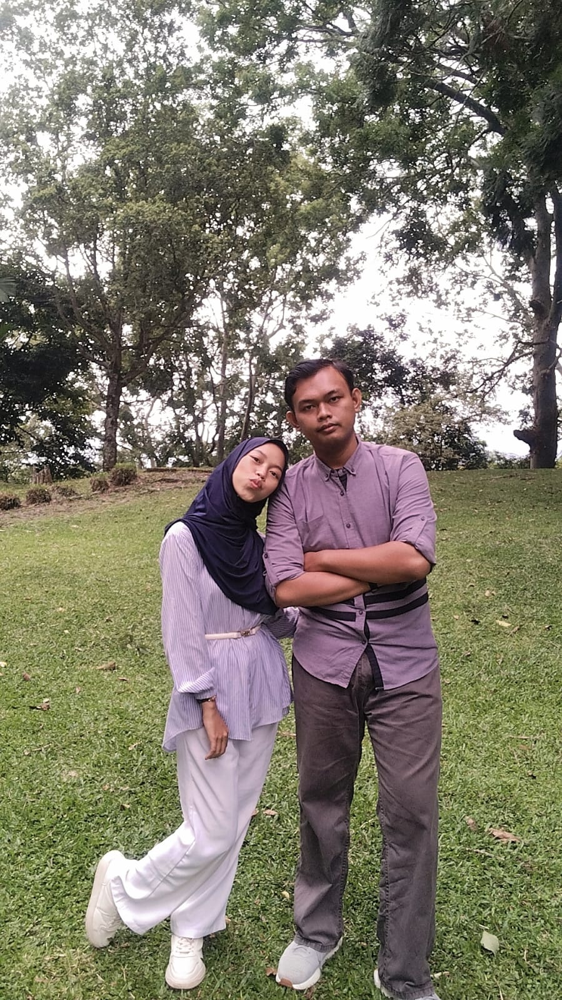

Jika Bandung adalah tentang perjalanan terjauh, maka Cianjur adalah cerita tentang petualangan paling nekat yang berujung jadi momen paling lucu sekaligus romantis yang pernah kami lalui. Cianjur di bentang alam Wonderful West Java bukan sekadar kota transit yang dikelilingi perbukitan hijau dan udara pegunungan yang bersih. Bagi saya dan dia, Cianjur adalah sebuah panggung cerita cinta tersendiri—tempat di mana hamparan alam yang megah berpadu dengan kepolosan sepasang kekasih yang sedang dimabuk asmara. Di kota inilah, kami menulis salah satu babak cerita paling berkesan ala Dilan dan Milea versi kami sendiri. Hari itu, saya membawa ia berkendara menuju salah satu sudut terindah di Cianjur: Kebun Raya Cibodas. Sepanjang perjalanan menanjak membelah hawa sejuk khas pegunungan, rasa lelah sama sekali kalah oleh debar bahagia karena bisa menghabiskan waktu berdua dengan dirinya. Sesampainya di sana, mata kami dimanjakan oleh pemandangan Wonderful yang luar biasa menakjubkan. Berjalan beriringan di bawah rindangnya pepohonan raksasa, melihat hamparan rumput hijau yang luas, mendengarkan gemercik air jernih, hingga menyaksikan keindahan bunga-bunga yang sedang bermekaran. Cibodas siang itu seolah menjelma menjadi milik kami berdua; tempat di mana tawa lepasnya menyatu dengan nyanyian alam, menciptakan memori indah yang langsung terkunci rapat di dalam dada. Namun, romansa Cianjur ternyata menyiapkan kejutan manis di akhir cerita. Setelah puas menjelajahi keindahan Cibodas dan matahari mulai beranjak pulang, kami pun memutuskan untuk kembali. Di tengah perjalanan pulang yang mulai diselimuti senja syahdu, tiba-tiba motor yang kami kendarai melambat dan mendadak mati. Panik? Jelas sempat ada. Ternyata kami kehabisan bensin! Lucunya, semesta seolah sengaja ikut bercanda sekaligus melindungi kami, karena motor itu benar-benar mogok pas di dekat area perumahan rumahnya. Momen mendorong motor di sisa hari itu tidak terasa menyebalkan sama sekali. Di bawah langit Cianjur yang perlahan menggelap, momen kehabisan bensin itu justru berubah menjadi waktu bonus bagi kami untuk berjalan kaki pelan sambil tertawa bersama menertawakan keteledoran saya. Seperti kata Dilan, rindu itu berat, tapi hari itu dorong motor sambil ditemani senyuman dan gandengan tangannya justru terasa sangat ringan. Cianjur telah mengajarkan kami bahwa keindahan sebuah perjalanan tidak hanya saat semuanya berjalan lancar di tempat wisata yang indah, tapi juga tentang bagaimana sebuah insiden kecil seperti habis bensin bisa berubah menjadi kenangan manis yang selalu membuat kami tersenyum setiap kali mengingatnya.